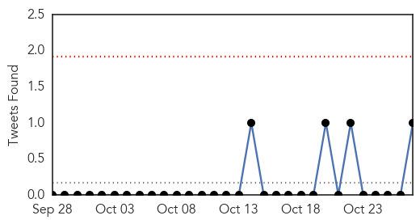
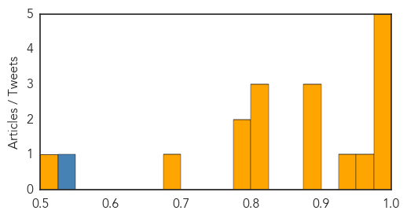

Influenza
30-Day Web Trend
30-Day Twitter Trend
0 alerts, 0 warnings

Article Locations

Article Confidences
Top Articles:
- 0.999
- Ministry of Health advises public of Seasonal Influenza
- 0.998
- Health, Wellness and Medical Care in Prague and Czech Republic,
- 0.994
- Flu shots now available in Grey-Bruce
- 0.992
- Get a flu shot before it is too late
- 0.982
- Premier McNeil: This won’t hurt a bit
- 0.965
- Flu shots now available for season
- 0.943
- Tragedy prompts family to raise awareness
- 0.893
- Articles, event listings and opinion
- 0.886
- ‘Flu Shots’ Offered in a Variety of Ways
- 0.878
- Albertans encouraged to get Flu shots
- 0.813
- Today's stories from newspapers in Ottawa
- 0.810
- Spread of unknown dog illness in Orangeville raises new flags across Ontario
- 0.800
- Today's stories from newspapers in Ottawa
- 0.787
- Today's stories from newspapers in Orangeville
- 0.783
- Today's stories from newspapers in Norfolk County
- 0.699
- SCH campaign on flu vaccination begins
- 0.519
- Exercise Camellia ensures AFCD is prepared for avian influenza outbreak
Top Tweets:
- 0.548
- RT: Look who got his flu shot today!! Respiratorythursday influenza vaccination LGBThealth menshealth Myownadvice http://t…
Unknown
30-Day Web Trend
0 alerts, 0 warnings

30-Day Twitter Trend
2 alerts, 0 warnings

Article Locations


Article Confidences

Top Articles:
- 0.980
- WellSpan York Hospital in Pennsylvania warns 1,300 heart surgery patients of infection risk
- 0.979
- Hundreds sick from shigella outbreak in six different counties of San Francisco: Authorities urge immediate precautions
- 0.966
- Open-heart patients may have been exposed to infection-causing bacteria during surgery, York Hospital warns
- 0.965
- York hospital warns open-heart surgery patients about infection
- 0.963
- WellSpan York Hospital Notifies Open-Heart Surgery Patients of Possible Infection Risk
- 0.941
- 4 Dead After Being Infected by a Device in Surgery at a Pennsylvania Hospital
- 0.928
- Shigella Bacteria Outbreak Sickens Nearly 200 In San Francisco Area
- 0.909
- Flu shots for students stressed in West Virginia - MariettaTimes.com
- 0.906
- Flu season is just getting started in Rhode Island
- 0.892
- NHS chiefs rule out C. diff bug outbreak in Tayside hospitals
- 0.891
- NIH Launches Trial Of Investigational Genital Herpes Vaccine
- 0.891
- Feed bags found to be spreading deadly pig disease
- 0.890
- WV MetroNews – W.Va. health and education officials team up to fight spread of the flu
- 0.887
- Bacterial infection suspected in 4 deaths at Pennsylvania hospital
- 0.877
- Concerns over new disease caused by ticks
- 0.872
- Did Surgery Device Infection Lead to Death of 4 Patients in Pennsylvania Hospital?
- 0.844
- Suspected Shigella cases linked to San Jose restaurant up to 182
- 0.841
- Why Tuberculosis Is More Prevalent in Parts of London Than Iraq or Rwanda
- 0.827
- Free Flu Shots Available At City Health Centers « CBS Philly
- 0.777
- St. Joseph's Hospital waiting on tests of water system for Legionnaires' Disease
- 0.776
- Stereotypes In Health Care Make Patients Feel Worse
- 0.768
- Free Flu Shots At Health Unit In Van Buren
- 0.758
- San Jose Shigella Outbreak Expanded to Six Counties, Sickening 182
- 0.756
- Shigella bacteria outbreak grows to 182 people in six Bay Area counties
- 0.742
- 'No sign of human infection' from anthrax-diseased cow in Wiltshire (From Wiltshire Business Online)
- 0.742
- Health Digest for: Oct. 27, 2015
- 0.742
- 'No sign of human infection' from anthrax-diseased cow in Wiltshire
- 0.730
- Red flag over HIV medicine stock out
- 0.730
- More than 90 percent vote, paving the way for Congo president's third term
- 0.724
- President Hollande honours 43 victims of French bus crash
- 0.710
- Brazil back on top for interest in Miami real estate
- 0.705
- US ‘to increase ground raids on Islamic State group'
- 0.699
- Dell children’s to begin seasonal visitor restrictions to keep patients healthy
- 0.689
- High alert in health depts across country
- 0.684
- Tuberculosis rates in parts of London 'higher than Rwanda and Eritrea' « Guernsey Press
- 0.675
- Drive-through flu shot clinic attracts 800
- 0.672
- Recycled sewerage water in Vic school
- 0.655
- French pilots escape Dominican Republic after 'Air Cocaine' drug conviction
- 0.652
- Some Parts of London Have Higher Tuberculosis Rates Than Eritrea and Iraq
- 0.648
- Colombian rebels stage deadly ambush on poll workers
- 0.642
- UN overwhelmingly calls for end to US embargo on Cuba
- 0.642
- Rival groups kill six hostages in tit-for-tat CAR violence
- 0.642
- Mobile roaming charges to be banned across EU
- 0.642
- The old man and the seaborne migrant: two worlds meet in Italy
- 0.640
- Heart Surgery Patients Die of Bacterial Infection in Pennsylvania
- 0.640
- University Hospital yet to fully control infection outbreak - chairman
- 0.634
- South Africa should override patent on key HIV medicine after widespread stock out problem
- 0.633
- 'No sign of human infection' from anthrax-diseased cow in Wiltshire
- 0.620
- Mass drug administration launched
- 0.620
- Aetna Signs Accountable Care Arrangements with Mercy Health System, St. Mary Medical Center
Showing top 50 articles...
Top Tweets:
- 0.509
- Saudis report +4 MERS cases. 3 caught virus in hospitals. Camels & hospitals biggest risk factors for MERS in KSA. https://t.co/UmQLXXD0dr